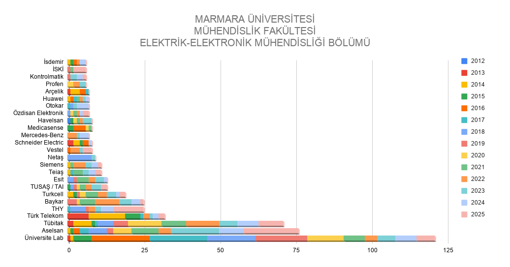
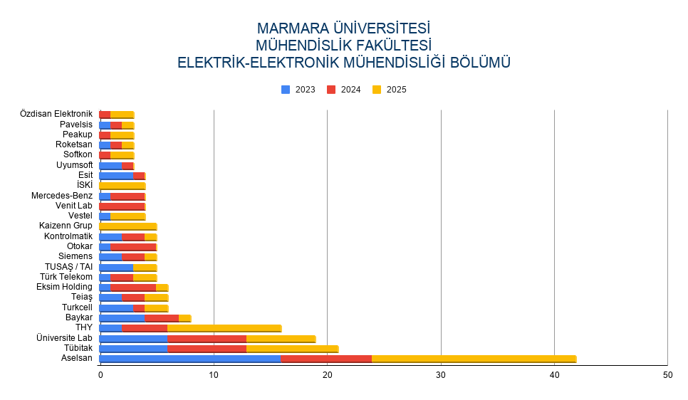

Uzun bir süredir günlük olarak aktif kullandığım tek sosyal medya platformu, LinkedIn. Burada özellikle öğrenci arkadaşlarımın projelerini ve başarılarını gördükçe motivasyonumun daha da arttığını fark ediyorum. Bahar yarıyılının sonuna yaklaştığımız bu günlerde, staj kabullerinin de iyice yoğunlaştığını görmeye başladım. Hal böyle olunca, bölümümüzdeki (Marmara Üniversitesi, Mühendislik Fakültesi, Elektrik-Elektronik Mühendisliği Bölümü) genel durumu merak ederek Staj Komisyonu’ndaki arkadaşlarımdan yardım istedim. Sağ olsunlar, ellerindeki ham veriyi benimle paylaştılar. Ben de bu verileri düzenleyerek hazırladığım iki grafiği ve öne çıkan istatistikleri, aşağıda bir analiz eşliğinde paylaşıyorum.
Genel Tablo ve Sektörel Dağılım

2012-2025 yılları arasını kapsayan verilerde, yaklaşık 1700 öğrencimizin staj bilgisine ulaştık. Bu süreçte toplam yaklaşık 800 farklı kurum, kuruluş ve firmada staj yapılmış. Firmaları kategorize ettiğimizde, alfabetik sırayla şu sektörler öne çıkıyor:
- Akademi / Üniversite Laboratuvarları
- Enerji
- Finans
- Gıda
- Havacılık, Uzay ve Savunma Sanayii
- Otomotiv
- Robotik, Mekatronik ve Otomasyon
- Sağlık
- Siber Güvenlik
- Tarım
- Telekomünikasyon
- Turizm
- Ulaşım
- Yazılım / Bilişim
- ve diğerleri..
Yapılan tüm stajların yaklaşık %31’i birinci grafikte yer alan ilk 25 şirkette gerçekleşmiş durumda. Toplam stajların %17’sini Savunma Sanayii, %9’unu Telekomünikasyon şirketleri, %7’sini ise üniversite laboratuvarları oluşturuyor.
Son 3 Yılın Trendleri (2023-2024-2025)

Son 3 yıla baktığımızda toplam 400 kadar firmada, 590 kadar öğrencimiz staj yapmış. Lisans sürecindeki iki zorunlu staj dönemi göz önüne alındığında, öğrencilerimizin yaklaşık %80-85’i kendi döneminde staj yeri bulabilirken; geri kalan kesim stajlarını birleştirerek son senesinde veya 4. sene sonrasında mezuniyet öncesinde tamamlıyor. Grafikte en çok öğrenci gönderdiğimiz 25 firmanın verilerini incelediğimizde, son 3 senede toplam staj yapan öğrencilerimizin %34’ü bu firmalarda staj yapmıştır.
Bu 25 firmanın verilerine göre, genel toplamın yaklaşık %21’lik kısmının Savunma Sanayii şirketlerinde staj yapan öğrencilerimizden oluştuğu görülürken, bu oran Telekomünikasyon şirketlerinde yaklaşık %3 civarındadır. Tüm şirketlere baktığımızda bu iki sektörün toplam payı %24’ten %29’lara kadar çıkmaktadır. Enerji sektöründe yapılan stajların payı ise yaklaşık %6 civarındadır. Haricen Otomasyon, Otomotiv ve Yazılım sektörlerinde de toplamda %13 gibi ciddi bir pay bulunmaktadır.
Üniversite laboratuvarlarında yapılan staj oranı %3 seviyesindedir. Ancak özellikle Sağlık ve Tarım sektöründe çalışma yapan firmaların oranının toplamda %4’lerde kalması da bir diğer dikkate değer noktadır.
Elimizdeki verilerden daha onlarca farklı istatistik çıkartabiliriz. Ancak yukarıda yazdıklarım genel gidişatı göstermesi açısından gayet makul duruyor. Beklendiği üzere son 3 senede özellikle savunma sanayii şirketlerinde yapılan staj oranlarında ciddi bir artış göze çarpıyor. Enerji sektöründe yapılan stajlarda da bir artış olduğu göze çarpıyor ve bir yükseliş trendi mevcut. Bununla beraber Telekomünikasyon firmalarında yapılan stajlarda oran olarak bir düşüş görünüyor. Yine özellikle sağlık ve tarım teknolojileri konusunda çalışan firmalarda yapılan staj oranlarının azlığı dikkati çekiyor.
Son Notlar
Yukarıdaki istatistiklere uzun dönem staj veya part-time çalışılan şirketler dahil değildir. Bununla alakalı şu an için elimde bir veri bulunmuyor ancak öğrencilerimizle genel yaptığım sohbetlerde, izlenimim buradaki trendin de gittikçe arttığı yönünde.
Firmalara tavsiye
Staj bulma süreci, öğrenciyi gerçek hayata hazırlayan en önemli süreçlerden birisi. Kimisi ilk başvurduğu yerden kabul alabilirken, kimisi onlarca başvurudan sonra bile ancak son dakikalarda bir fırsat yakalayabiliyor. Bazen kurum içi prosedürlere de takılıp kalınabiliyor. Ne kadar sancılı da olsa, tüm bunların hepsi bir tecrübe oluyor insanın hayatında. Umarım yapılan stajlar, pratik mühendislik açısından tüm öğrencilerimize fayda katar. Burada sorumluluk öğrencilerimizde olduğu kadar, staj imkanı veren şirketlere de düşüyor. Stajyer öğrencinin en az 1 projeye dahil edilmesini ve burada aktif rol almasını sağlamak çok mühim. Ayrıca firmaların stajyerlere bir ücret verilmesi konusunda da eli açık davranması herkesin faydasına olacaktır. Nihayetinde zorunlu ve 30 iş günü de olsa, endüstriye ilk adımını atan öğrencilerimizin ilk maaşlarını alma duygusunu tatmalarını sağlamak çok önemli diye düşünüyorum. Kendi ilk maaşımı aldığımı hatırlıyorum da, gerçekten onun gibisi yok.
Mezunlardan istek
Son bir dipnot yazmadan staj konusunu kapatmak istemedim. Staj yeri bulmada belki de en önemli yapı taşı, bölümün kendi mezunları denilebilir. Bölüm mezunları çalıştıkları yerlerde güzel işler yapmaya başladıkça, yönetim kadrosu kendiliklerinden yeni stajyer adaylarını da bizim bölümümüzden daha çok ister oldular. Bunun çokça defa şahidi oldum. Bu sebeple bölüm mezunlarımıza da bir nebze iş düşüyor diyebilirim.
Sağlıcakla kalınız.